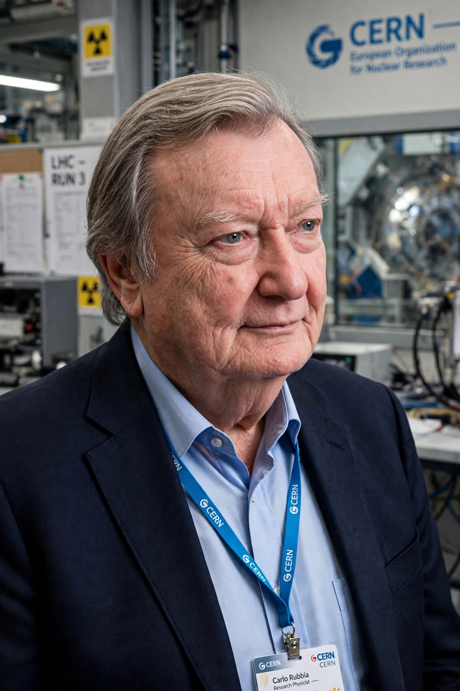

| Born | 31 March 1934 Gorizia, Italy |
|---|---|
| Alma mater | Scuola Normale Superiore, University of Pisa |
| Known for | Discovery of the W and Z bosons |
| Awards | Nobel Prize in Physics (1984) |
| Fields | Particle physics |
| Institutions | CERN, Harvard University |
Carlo Rubbia (born 31 March 1934) is an Italian particle physicist and inventor who shared the 1984 Nobel Prize in Physics with Simon van der Meer for work leading to the discovery of the W and Z particles, the carriers of the weak interaction, at CERN.
Rubbia was born in Gorizia, in the Friuli-Venezia Giulia region of Italy. He studied at the Faculty of Mathematical, Physical and Natural Sciences of the University of Pisa, graduating from the Scuola Normale Superiore in 1957 with a thesis on cosmic ray experiments.
Rubbia joined CERN in 1961 and spent much of his career there, interspersed with periods at Harvard University, where he was Higgins Professor of Physics. His most celebrated achievement was the proposal to convert CERN's Super Proton Synchrotron into a proton–antiproton collider (the Sp̄S), using van der Meer's stochastic cooling technique to accumulate antiprotons. The UA1 experiment, led by Rubbia, together with UA2, reported the discovery of the W and Z bosons in 1983 — a landmark confirmation of the electroweak theory.
Rubbia served as Director-General of CERN from 1989 to 1993, during which time the Large Electron–Positron Collider (LEP) was completed and construction of the Large Hadron Collider was set in motion. Later in his career he turned to energy research, promoting concepts such as the energy amplifier — a subcritical nuclear reactor driven by a particle accelerator, intended to burn nuclear waste — and solar thermal power generation.